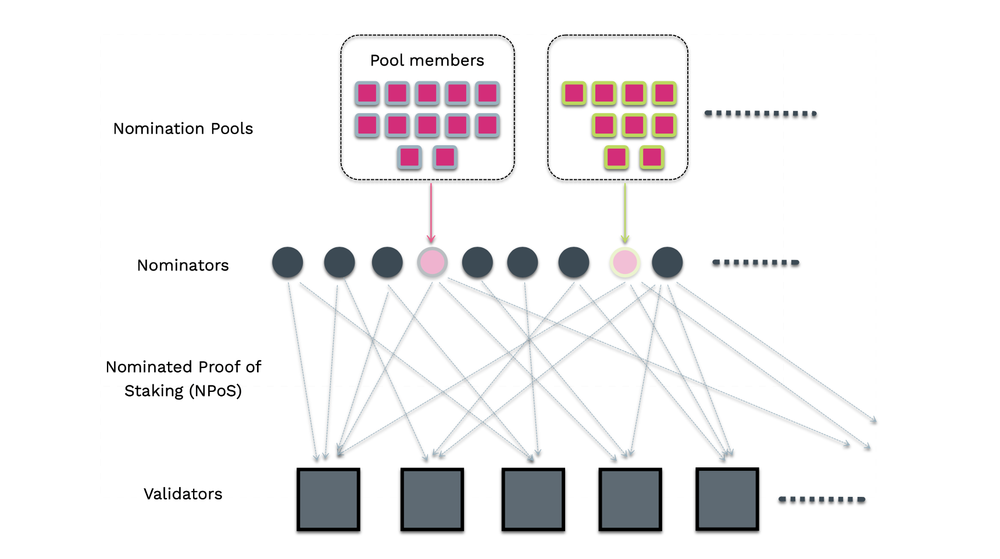

Nomination Pools
Nomination Pools are live on Polkadot!
Nomination pools are a new feature for Polkadot’s staking system that allows users to pool their tokens together on-chain to nominate validators and receive rewards, significantly improving the system’s scalability. Now, anyone with as little as 1 DOT can receive rewards for staking natively on Polkadot. Note that rewards are not guaranteed for those pools that do not have enough bonded funds to be included within the bags list. Only members of active pools will receive rewards.
Note
Learn the key differences between Staking directly vs Joining a Nomination Pool.
For Ledger users: Joining a nomination pool is possible only with the XL version of the Polkadot Ledger App. This should be installed by default on Ledger Nano X and S Plus, but not on the Nano S.
If you become a nomination pool member or a pool admin, you cannot participate in Governance with the bonded tokens in the pool, as they are held in a system account.
Have questions on Nomination Pools?
Please join the Polkadot Discord for asking general questions about Nomination Pools. If you are a developer, please join our nomination pools support channel.

Nomination pools are one of the key features from the roadmap of staking improvements. They are designed to permissionlessly allow members to pool their funds together and act as a single nominator account.
Due to the current runtime constraints, the relay chain can only handle a limited number of nominators (22500 on Polkadot and 12500 on Kusama) comfortably in the electing set. As one of the objectives of the NPoS algorithm is to maximize the overall stake on the network, it can be inferred that the staking system favors nominators with a larger stake. Only the nominator accounts which back the validators in the active set are eligible for receiving staking rewards. This leaves out nomination intents from the accounts with lower token balance than the min-active nomination and places them in a waiting queue to enter electing set. Nomination pools will be handy for members who want to participate in the staking system with a stake much lower than the dynamic min-active nomination threshold on the network. All operations are constant space and time complexity relative to the number of members, eliminating any theoretical upper bound on the number of members the system can handle and thus scaling the number of accounts that can participate and earn rewards in the staking system. In summary, each nomination pool is viewed as a single nominator from the NPoS system point of view.
Why aren't the members in the nomination pools called delegators?
The term delegator is associated too much with Delegated Proof of Staking (DPoS), and since the network implements Nominated Proof of Staking (NPoS), naming them delegators would be misleading. The term member is our generic replacement for delegator. In action, members are quite similar to delegators and delegate their nomination power to the pool.
The pool’s earnings are split pro rata to a member's stake in the bonded pool (and thus, the staking rewards for members will be the same as if they were a nominator). Importantly, slashes are also applied proportionally to members who may have been actively bonded.
Key Components¶
- Bonded Pool: Tracks the distribution of actively staked funds.
- Reward Pool: Tracks rewards earned by actively staked funds.
- Unbonding Sub Pools: Collection of pools at different phases (i.e. eras) of the unbonding lifecycle.
- Members: Accounts that nominate to the pools.
- Point: Unit of measure for a member’s portion of a pool's funds. All pools start with a point to Planck ratio of 1. Over time, if the pool receives rewards, they increase in value, and if the pool is slashed, it decreases in value.
Pool Member Lifecycle¶
Join a pool¶
A member delegates funds to a pool by transferring some amount to the pool’s bonded account with the
join extrinsic. The pool then increases its bond with the new funds. A member is afforded the
ability to bond additional funds or re-stake rewards as long as they are already actively bonded.
Note that a member may only belong to one pool at a time.
The current minimum bond to join a pool can be seen here.
Info
The funds nominated to a pool will not be visible in the member's account balance on Polkadot JS Apps UI. This is because the member funds are transferred from their account to the pool's system account. This pool account is not accessible by anyone (including the pool root or depositor) and only the pool's internal logic can access the account.
Use Proxy Accounts to join Nomination Pools
Depending on how much control you want to give your proxy, you might choose between any > non-transfer > staking > nomination pool proxy, with the latter being only able to sign transactions related to the NominationPool pallet.
Check the "How to join a pool" section in this support article for guidelines.
Claim rewards¶
The member can claim their portion of any rewards that have accumulated since the previous time they claimed (or in the case that they have never claimed, any rewards that have accumulated since the era after they joined). Rewards are split pro rata among the actively bonded members. Check the "How to claim rewards" section in this support article for guidelines.
Claim Permissions¶
As a pool member, you can grant permission to any other account to claim and compound rewards on your behalf. There are four permission options:
Permissioned(default): you need to claim and compound your rewards.PermissionlessCompound: you grant permission to any other account to compound (claim and bond) your rewards on your behalf.PermissionlessWithdraw: you grant permission to any other account to withdraw (claim and keep as a free balance) your rewards on your behalf.PermissionlessAll: you grant permission to any other account to compound or withdraw your rewards on your behalf.
See the Staking Dashboard page for more information about how to set your claim permissions.
See the advanced guides to learn how to claim rewards for another pool member.
Unbond and withdraw funds¶
At any point in time after joining the pool, a member can start the process of exiting by unbonding.
unbond will unbond part or all of the member's funds. After unbond has been called and the
unbonding duration has passed a member may
withdraw their funds with withdrawUnbonded. Withdrawing effectively ends a member's relationship
with their pool, allowing them to join a different pool if desired. Check the "Withdraw unbonded
funds" section in
this support article
for guidelines.
Unbonding transaction automatically triggers withdrawal of rewards
When there is a change in the bonded balance, the accumulated rewards in the pool thus far are automatically withdrawn to the account. The rewards are then accrued based on the updated bonded balance.
Limitations of Nomination Pools¶
- A member cannot vote (e.g. in Referenda or for Council members) with their nominated funds. This may be changed in the future once accounts are afforded the ability to split votes.
- For a member to switch pools, all funds from the account must be unbonded. This process takes 28 eras.
- A member can partially unbond the staked funds in the pool (at most 16 partial unbonds).
Pool Administration¶
States¶
- Open: The pool is open to be joined by anyone.
- Blocked: The pool is blocked; no joiners are permitted.
- Destroying: The pool is in the process of being destroyed. Once in this state, the pool may never revert to any other state; it can only proceed to be destroyed. All members can be permissionlessly unbonded; this allows the pool to be dismantled regardless of any member’s proactivity.
Roles¶
- Depositor: Creates the pool and is the initial member. The depositor can only leave the pool once all other members have left. Once they leave by withdrawing, the pool is fully removed from the system.
- Nominator: Can select the validators the pool nominates.
- Bouncer: Can change the pool’s state and kick (permissionlessly unbond/withdraw) members if the pool is blocked.
- Root: Can change the nominator, bouncer, or itself. Further, it can perform any of the actions the nominator or bouncer can.
Pool Commissions¶
As the pool root role, you can set pool commissions that will be applied to the staking rewards paid out to the pool's system account before rewards are allocated for the pool members. You can set pool commissions through the Polkadot Staking Dashboard.
Three methods can be used when setting the pool commission:
- Commission Rate (
nominationPools.setCommissionextrinsic): the start or new commission rate (newCommissionparameter) that can be set between 0% and the max commission parameter (decided through governance referendum) via theglobalMaxCommissionparameter. You will need to specify an Input Payee Account, i.e. the account that will receive the commission. - Max Commission (
nominationPools.setCommissionMaxextrinsic): the maximum commission (maxCommissionparameter) the pool will apply to its members (between 0% and Max Commission). Note that once set, the pool admin can only lower it. - Change Rate (
nominationPools.setCommissionChangeRateextrinsic): the maximum rate increase (maxIncreaseparameter) allowed for a single commission update. Note that once set, the pool admin can only lower it. When setting the Change Rate, it will also be possible to set aminDelayquantified as the number of blocks (since last commission update) after which it is possible to change the commission (i.e. the minimum delay between commission updates). Note that once set, the pool admin can only increase it.
Max Commission and Change Rate must not be necessarily set. It is the choice of the pool admin to set those parameters and provide transparency to the pool members about the pool's commission policy.
Max Commission and Change Rate are currently permanent
Once the Max Commission and the Change Rate are set, the pool admin currently can only decrease those values. The minimum delay between commission updates can only be increased. The situation can change in the future and a forceSetCommissionMax method can be proposed through governance referendum.
Let's take, for example, Pool A, which sets the Commission Rate to 10%, the Max Commission to 100%, and the Change Rate to 1% every 300 blocks (which equates to approximately 30 minutes). The following statements are true:
- The pool commission can be increased by 1% every 30 minutes. Bigger increases are not allowed. Increases of less than or equal to 1% are not allowed sooner than 30 minutes since the last commission update.
- The Max Commission can only be decreased from 100%. Once decreased, it can be decreased again but it cannot be increased.
- The Change Rate's maximum increase can only be decreased from 1%. Once decreased, it can be decreased again but it cannot be increased.
- The Change Rate's minimum delay between updates of 30 min can only be increased. Once increased, it can be increased again but it cannot be decreased.
Pool Lifecycle¶
Advanced How-to Guides
See this page for more information about the lifecycle of nomination pools. The cycle includes creation, upkeep and destruction.
Nomination Pools - Slashing¶
Suppose the staking system slashes a pool’s underlying nomination account. In that case, the slash is distributed evenly across the bonded pool, and the unbonding pools from slash era+1 through the slash apply era. Thus, any member who either a) was unbonding or b) was actively bonded in the aforementioned range of eras will be affected by the slash. In other words, a member who may have been actively bonded during the offence is slashed pro rata based on its stake relative to the total slash amount.
Unbonding pools need to be slashed to ensure all nominators who were in the bonded pool while it was backing a validator that committed an offense are punished. Without these measures a nominator could unbond right after a validator equivocated with no consequences.
This strategy is unfair to members who joined after the slash because they get slashed as well, but it spares members who unbond. The latter is much more important for security: if a pool's validators attack the network, their members need to unbond fast! Avoiding additional slashes gives them an incentive to do that if validators get repeatedly slashed.
Nominating vs Joining a Pool¶
Nominating is the action of choosing validators. It does not simply involve bonding tokens. Nominating is an active task, which implies that you regularly monitor that your stake is backing an active validator in all the eras and check if you are receiving your staking rewards. More importantly, ensure that the validators you chose always act in the best interests of the network protocol and have less chance of getting slashed. To nominate you need a minimum bond, while to receive rewards, you need at least a balance greater than the minimum active bond. If the validator misbehaves, It is worth noting that your stake is subject to slashing, irrespective of whether you are at the top nominators or not.
As the minimum active bond is a dynamic value, it can make your nomination inactive when the threshold goes above your bonded balance. Hence, to be eligible to earn rewards while nominating, you would need to stake a much higher balance than the minimum active bond.
Nomination pools are a way to participate in staking with as little as 1 DOT and earn staking rewards. Nomination pools differ from custodial solutions (like staking through central exchanges) because they are non-custodial, native to Polkadot's protocol, permissionless, transparent, and run in a decentralized way by the community. Before joining a nomination pool, you must ensure that the pool is earning rewards and nominating the validators that match your preferences. Participating in pools is more of a set-and-forget action than nominating by yourself. The pool operator maintains the list of validators nominated by the pool, and so, in a way, you are trusting the pool operator to act in your best interests. However, it is advised to check the validators nominated by the pool from time to time and change the pool if necessary.
Minimum Active Nomination Value is Dynamic
The minimum amount required to become an active nominator and earn rewards can be seen here. If you have less tokens than the minimum active nomination and still want to participate in staking, you can join the nomination pools with a smaller bond. For additional information, see this blog post. Check the wiki doc on nomination pools for more information.
| Nominating | Joining a Pool |
|---|---|
| Minimum 250 DOT to nominate. | Minimum 1 DOT to be a member. |
| Rewards can be compounded automatically or sent to any account. | Rewards can be manually claimed to the pool member's account and be bonded in the pool again to compound them. |
| If the active validator gets slashed, all active nominators are subjected to slashing. | If the active validator gets slashed, all pool members are subjected to slashing. |
| Can bond and stake DOT indefinitely. | Can bond and stake DOT until the pool exists. |
| Unbonding period of 28 days. Can switch validators without unbonding. | Unbonding period of 28 days. Need to unbond before switching to a different pool. |
| Maximum uncapped. | Maximum uncapped. |
| Should bond more than the minimum active nomination in an era to be eligible to earn staking rewards, although it can depend on multiple other factors outlined in the linked document. | A nomination pool earns rewards in an era if it satisfies all the conditions mentioned for the nominator (as the nomination pool is just a nominator from the NPoS system perspective). |
| Staked tokens can be used for participation in Governance. | Staked tokens cannot be used for participation in Governance. |
| Rewards payout can be triggered permissionlessly by anyone (typically done by the validator). | A pool member can self claim the rewards or can grant permission to any other account to claim and compound rewards on your behalf. See Claim Permissions. |
| Bonded funds remain in your account. | Bonded funds are transferred to a pool account which is administered by the network protocol and is not accessible to anyone else. See System Accounts for more information. |
| Nominator manages the list of staked validators (up to 16). | Nominations managed by the pool operator. |